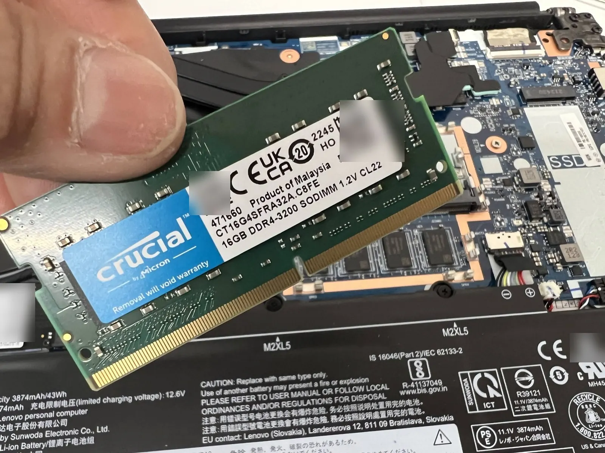
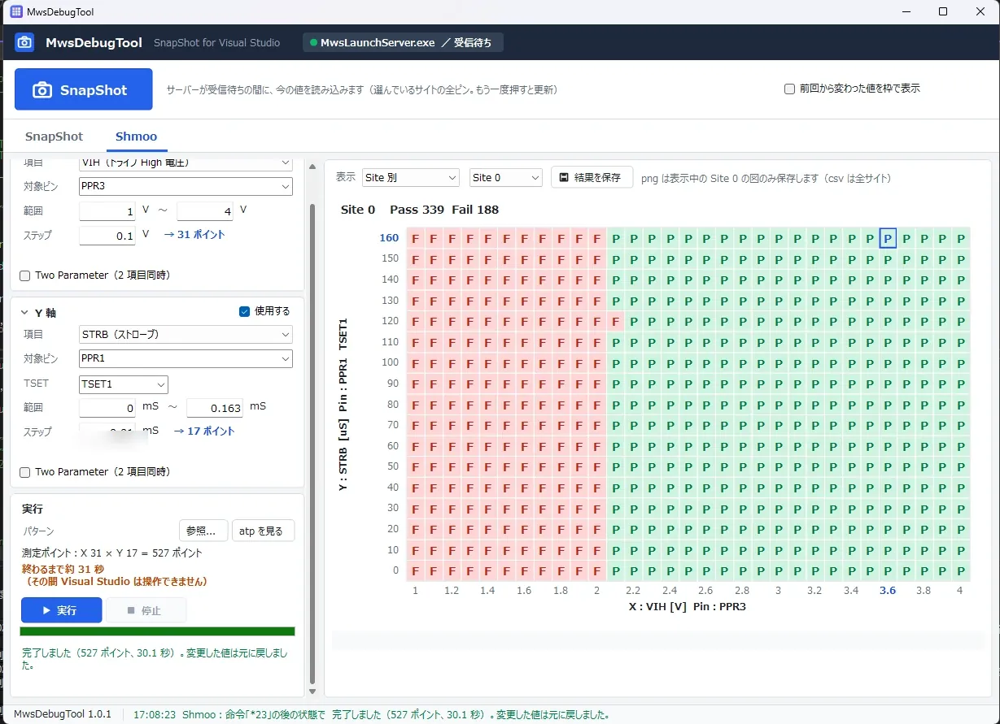
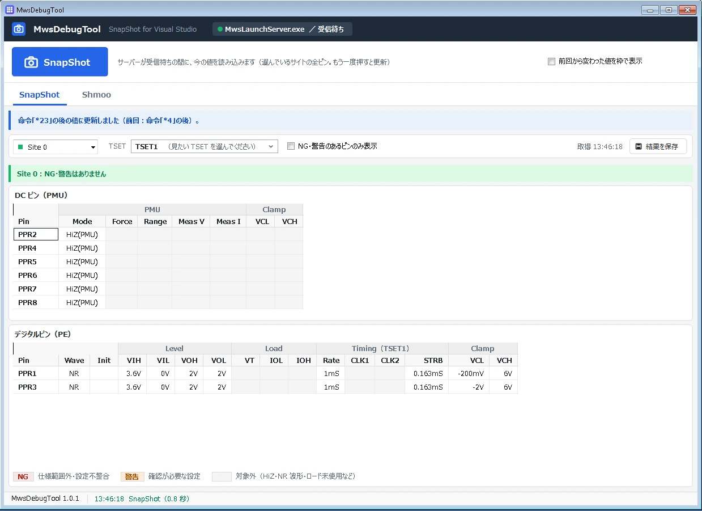
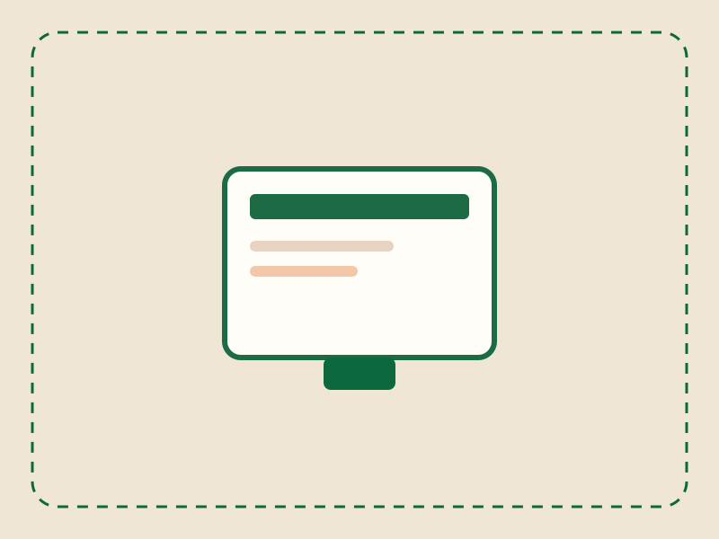

大津町で、店や畑の機械を見ています
熊本のITなんでも屋です。
診断・ご相談は無料です。まず話を聞きます。
電源が入らないパソコンを見ています。毎月のExcel集計がつらい、という話も多いです。
見積もりも無料です。このページの金額は、まだ仮です。
- 年中無休 9:00–17:00
- 熊本県菊池郡大津町
- 096-282-8122



こんなことで困っていませんか
店でも畑でも、ひとりで仕事をしている人でも、紙の帳面のままでかまいません。当てはまるものがあれば、そこから話します。
-
スマホの操作が不安
LINEで写真を送りたいのに、どのボタンか迷うことがあります。
-
パソコンが遅い、急に止まった
仕事のファイルが入ったまま、電源が入らなくなった、という相談が多いです。
-
毎日、同じ書き写しがある
紙の伝票を、もう一度表計算に打ち直しています。
-
在庫・予約・売上が手書き
帳面を開かないと、棚に今いくつあるかわかりません。
-
AIが気になる
文章の下書きに使えると聞きました。お客さんの名前を入れていいかは、まだ決めていません。
-
現場の数を、あとから見たい
温度や、機械が止まった時刻を、あとから見られません。
-
説明が、人によって違う
新しい人に、毎回いちから口で教えています。
-
直せる人が、もういない
作った人がいなくなって、昔の表計算を開ける人がいません。
ひとつでも当てはまったら、その話だけで連絡してください。無料で相談する
サービス
全部を新しい仕組みにする話から始めません。今のやり方を見て、困っているところだけ直します。
-
スマホ・パソコン
遅い原因を見たり、控えを取ったりします。買い替えが必要なら、理由を先に言います。
料金の目安 -
ツール・ソフトウェア・アプリ開発
日報や在庫の画面を、紙やExcelの代わりに小さく作ります。毎月の集計がつらい、という相談が多いです。
料金の目安 -
AIを使ってみる
案内文の下書きや、問い合わせの整理に使います。外に出していい情報は、先に一緒に決めます。
料金の目安 -
現場の小さな機械
売っている機械では合わないときに、温度を測る部品や、小さい表示、治具を作ります。
料金の目安 -
画面を見ながら覚える
少人数で、その店の画面を見ながらやります。
料金の目安 -
その後の保守
使い始めてからの「これ、どうするんだっけ」を、月ごとに受けます。
料金の目安
仕事のようす


料金
診断・ご相談は無料です。話を聞くだけでもかまいません。見積もりも無料です。
下の金額は、まだ仮です。税込の目安なので、この数字のまま請求はしません。作業の前に、やることと金額を書きます。見てから頼まなくてもかまいません。こちらから伺うときは、「訪問して見る」の金額がかかります。
はじめに
-
診断・ご相談
無料 仮の料金
オンラインで30分くらい話します。
-
訪問して見る
1,000円 仮の料金
熊本県内で、60分くらい見に行きます。遠い場所は、下のオプションを足します。
-
スマホ・パソコンの設定
5,000円〜 仮の料金
LINEやメールの設定、控えの保存、つながらない原因を見ます。
つくる・覚える
-
ツール・ソフトウェア・アプリ開発
30,000円〜 仮の料金
日報や在庫の画面を、今の紙やExcelの代わりに作ります。
-
AIを使ってみる
20,000円〜 仮の料金
文章の下書きや、問い合わせの整理です。出していい情報は先に決めます。
-
現場の機械・基板・3Dプリンタ
15,000円〜 仮の料金
小さい表示や、温度を測る部品、治具です。部品代が別にかかるときは先に言います。
-
画面を見ながら覚える
10,000円〜 仮の料金
90分くらいです。人数と場所は、そのとき決めます。
保守プラン（月額）
-
ライト
5,000円 / 月 仮の料金
メッセージで質問できます。平日に返します。
-
スタンダード
12,000円 / 月 仮の料金
ライトに加えて、月1回画面を見るか、現地に行きます。
-
おまかせ
25,000円 / 月 仮の料金
こちらから先に見ます。小さい直しは、月2時間までです。
オプション
事例
自分たちで作っている機械と、店や畑でよく頼まれることです。
自社の製品・道具
-


自社の装置。ラック、扉を閉めた姿、基板の上面。 自社製品
PEPPER / PEPPER Server
測ったり試したりする装置です。動かすサーバも、基板も、プログラムも、ここで作っています。
-


Toyako。部品面と、裏面。 自社の基板
Toyako
電圧を数字にして試す、小さい基板です。8か所を同時に測って、結果を返します。測るタイミングは、専用の部品（FPGA）でそろえています。
-

自社の確認ソフト。条件を変えた地図。 自社の道具
MwsDebugTool
動きがおかしいとき、配線の問題かプログラムの問題かを分けます。ピンの今の値と、条件を変えた結果の地図を、その場で見ます。
-
教室の基板
キーホルダー基板
光る小さい基板に、自分で書いたプログラムを入れて動かします。教室で使っています。
こういう手伝いもします
-
例
農場の日報
紙の日報を、スマホから送れるようにして、あとから表で見ます。
-
例
商店の在庫
棚の数を、閉じた帳面ではなく、その日のうちに直せる表にします。
-
例
問い合わせの下書き
よくある返事の下書きを作ります。送る前に人が読みます。
-
例
急に止まったパソコン
中のファイルを残すほうを先に見て、直すか入れ替えるかを一緒に決めます。
現場に合わせたソフトを、ここで作れます
売っているソフトでは足りない仕事は、その場用の道具を自分たちで作ります。下の画面は、自分たちの試験装置を見るために作ったソフトです。
自社のソフト
MwsDebugTool
部品を試すプログラムのとなりで動く、Windowsのソフトです。サーバが次の命令を待っているあいだに、ピンの今の値を読みます。

このソフトは、自社の装置PEPPERと、それを動かすPEPPER Serverのために作りました。店の在庫や畑の記録も、同じようにその仕事の画面から作れます。
仕事の写真
組み立て、修理、教室、自社の装置の写真です。写真を押すと大きく見られます。
会社のこと
代表あいさつ
玉木智和です。大津町で、パソコンの修理や組み立て、基板、試験の装置を作っています。
店のレジ周りや畑の記録で困ったことがあれば、電話かメールをください。診断・ご相談は無料です。事務所は年中無休の9時から17時です。
-
基板も、動かすプログラムも
測る基板と、試験のプログラムを自分で作ります。調子が悪いとき、回路かプログラムかをその場で見ます。
-
仕事の画面
日報や在庫のように、毎日開く画面を小さく作れます。
-
AI
文章の下書きや、問い合わせの整理です。使い始めの設定から一緒にやります。
-
基板と、パソコンまわり
小さい基板を設計します。パソコンやネット、控えの保存も整えます。
-
3Dプリント
3Dプリンタが3台あります。治具やケースを、形にして渡せます。
-
教室
プログラミングを少人数で教えています。仕事の研修とは別です。
-

代表の玉木 -

3Dプリンタ（P2S が3台） 仮 -

教室の机 -

レモン電池 -

教室のロボット -
作業場
ご依頼の流れ
先に契約はしません。話を聞いて、金額を見てから決めてください。
-
困っていることを送る
フォームに、今困っていることを書いてください。上手な文章でなくてかまいません。
-
今のやり方を聞く
画面ごしか、こちらから伺うかです。最初は今のやり方を見せてもらいます。診断・ご相談は無料です。
-
やることと金額を書く
やることと、やらないこと、金額を書きます。見てから断ってもかまいません。見積もりは無料です。
-
作業に入る
納得してから始めます。途中でやり方を変えるときは、先に言います。
-
一緒に触って確認する
できたものを、その場で触って確認します。質問もそこで受けます。
-
続けるなら月額
使い続けたいときは、月額に移れます。一度きりでもかまいません。
よくある質問
パソコンがほとんどわかりません。
画面を一緒に見ます。ふだんの言葉で話します。
どこまで来てもらえますか。
熊本県内が中心です。遠いところは、電話で聞いてください。画面だけでもできます。
新しい機械を買わされますか。
今のスマホやパソコンで足りるなら、買い足しません。いるときだけ、理由を言います。
いくらかかりますか。
診断・ご相談と見積もりは無料です。このページの作業の金額は仮です。作業の前に、やることと金額を書きます。見てから断ってもかまいません。請求書も出します。
AIに、帳簿やお客さんの情報を送るのですか。
送っていいかを、先に決めます。出したくないものは、出さないやり方にします。
直したあとも見てくれますか。
月額で見続けるコースがあります。「これ、どうするんだっけ」も、そこで聞けます。
基板や3Dプリントだけでも頼めますか。
はい。小さな部品や、ケース、治具だけでもどうぞ。
教室とは何が違いますか。
同じ会社です。教室は子ども向けで、サイトは mowaschool.com（別サイト） です。このページは、店や畑や仕事の相談です。
お問い合わせ
診断・ご相談は無料です。話を聞くだけでもかまいません。見積もりも無料です。困っていることを、短く書いてください。届いた話は、返事以外には使いません。
- 名前
- mowaソリューションズ
- サービス
- ITなんでも屋
- 代表
- 玉木智和
- 電話
- 096-282-8122
- 住所
- 〒869-1217
熊本県菊池郡大津町森729-41 - 受付
- メール・SNSは24時間365日
事務所は年中無休 9:00〜17:00 - エリア
- 熊本県（画面だけでもできます）
フォームは、まだ仮の場所です 仮
GoogleフォームなどのURLを入れると、ここに表示されます。回答の通知は、次の両方に届くようにフォーム側で設定してください。
- ttamaki@mowasol.com
- satokana@mowasol.com
- フォームを作る
- 通知先に、上の2つのメールアドレスを両方追加する
- 埋め込み用のURLを、
site.jsのFORM_URLに貼る
フォームが使えないときは、メールでもかまいません。ttamaki@mowasol.com（24時間365日）。見積もりも無料です。